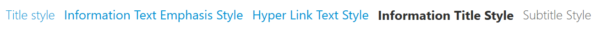
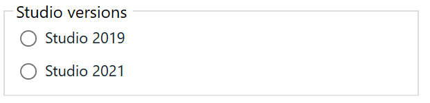
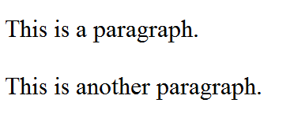

Studio Look & Feel in your 3rd party plugin
Together with the release of Trados Studio 2019 SR2 two new APIs were exposed which will allows you to take advantage of Studio styles in your plugin:
Sdl.Desktop.Platform.Styles.dllSdl.Desktop.Platform.Controls.dll
Note
In order to use Studio styles your plugin must be written in WPF.
Sample application can be found in public AppStore Community repository on GitHub.
Throughout this article we will be presenting some Studio styles and controls and how you can use them in your application.
Sdl.Desktop.Platform.Styles.dll
In this API were released following Studio resources:
- Buttons
- Checkbox
- Combobox
- DataGrid
- Generic Error style
- Groupbox
- NumericUpDown
- Progress Ring (Asterisk)
- Radio Button
- TextBlock
- TextBox
- TreeView
How to use resource styles in your plugin?
First of all you have to import all the .xaml files you want to use in your application:
<ResourceDictionary>
<ResourceDictionary.MergedDictionaries>
<ResourceDictionary Source="/Sdl.Desktop.Platform.Styles;component/ButtonResources.xaml"/>
<ResourceDictionary Source="/Sdl.Desktop.Platform.Styles;component/TextBoxResources.xaml"/>
<ResourceDictionary Source="/Sdl.Desktop.Platform.Styles;component/TextBlockResources.xaml"/>
<ResourceDictionary Source="/Sdl.Desktop.Platform.Styles;component/GroupboxResources.xaml"/>
</ResourceDictionary.MergedDictionaries>
</ResourceDictionary>
Buttons
There are several buttons styles exposed:
- Sdl.Button.PrimaryStyle
- Sdl.Button.SecondaryStyle
- Sdl.Button.HyperLinkStyle
- Sdl.Button.GeneralStyle
- Sdl.Button.WindowControlStyle

After you import the resource you can use it as follows:
<Button Style="{DynamicResource Sdl.Button.PrimaryStyle}" Command="{Binding AddCommand}" Content="Add TM" HorizontalAlignment="Right"/>
Textboxes
There are several textbox styles exposed, bellow you can see few examples:
- Sdl.TextBlock.TitleStyle
- Sdl.TextBlock.InformationTextEmphasisStyle
- Sdl.TextBlock.HyperLinkTextStyle
- Sdl.TextBlock.InformationTitleStyle
- Sdl.TextBlock.SubtitleStyle

After you import the resource you can use it as follows:
<TextBlock Style="{DynamicResource Sdl.TextBlock.TitleStyle}" Text="Title style" FontSize="14"/>
Data grid

Bellow you can see an data grid code example
<DataGrid Style="{DynamicResource Sdl.DataGrid.GenericStyle}" Margin="10"
ItemsSource="{Binding PluginsCollection, Mode=TwoWay, UpdateSourceTrigger=PropertyChanged}"
SelectionUnit="FullRow"
GridLinesVisibility="None">
<DataGrid.Columns>
<DataGridTextColumn Width="*" Header="Plugin name" Binding="{Binding PluginName}"/>
<DataGridTextColumn Width="*" Header="Studio versions" Binding="{Binding StudioVersion}"/>
</DataGrid.Columns>
</DataGrid>
Groupbox and RadioButtons

Code sample
<GroupBox Style="{DynamicResource Sdl.GroupBox.SingleLineStyle}" Header="Studio versions" Width="300" Margin="10">
<StackPanel>
<RadioButton Style="{DynamicResource Sdl.RadioButton.GenericStyle}" GroupName="Studio" Content="Studio 2019" Margin="5"/>
<RadioButton Style="{DynamicResource Sdl.RadioButton.GenericStyle}" GroupName="Studio" Content="Studio 2021" Margin="5"/>
</StackPanel>
</GroupBox>
Sdl.Desktop.Platform.Controls.dll
In this API were released following Studio controls:
| Studio Control | Description |
|---|---|
| Numeric UpDown | Represents a Windows box that displays numeric values. Up and Down buttons are available to increase/decrease the value from the box. |
| TextBoxWatermark | Custom textbox which display a custom set text as watermark and has a Clear button. |
| Bindable PasswordBox | Custom password box which allows you to obtain the Password in your viewmodel. |
| Uniform WrapPanel | Represents a wrapPanel which set the width of all childs to be the higher width between them |
| SortWise DataGrid | DataGrid with sorting capability |
In this API were released following Studio behaviours:
| Studio Behaviour | Description |
|---|---|
| DragDrop | This behaviour easily allows you to get the dropped files or directories. First thing you need to do is to import the behaviours exposed by the API in your project, and attach it to a grid for example. You need to add your own implementation for DragDropCommand. |
| WebBrowser Content Source | With this behaviour you can pass HTML code as source content to web browser. |
| WebBrowser Bindable Source | This behaviour allows you to easily set the navigation URI in your view model. |
| TextBlock AutoToolTip | Using this behaviour you can add a tooltip to a textblock. |
| WindowLoaded | With behaviour you can attach to your window loaded event. |
| TreeView SelectedItem Changed | With behaviour you can attachto SelectedItem Changed event of a treeview. |
How to use Studio Controls in your plugin?
First of all you have to import the api in your application:
<xmlns:controls="clr-namespace:Sdl.Desktop.Platform.Controls.Controls;assembly=Sdl.Desktop.Platform.Controls"/>
Watermark TextBox
<xmlns:watermarkTextBox="clr-namespace:Sdl.Desktop.Platform.Controls.Controls.WatermarkTextBox;assembly=Sdl.Desktop.Platform.Controls"/>
<TextBox
Style="{DynamicResource WatermarkTextBox}"
Text="{Binding SearchText, Mode=TwoWay, UpdateSourceTrigger=PropertyChanged}"
watermarkTextBox:TextBoxWatermarkHelper.WatermarkText ="{Binding SearchWatermarkText}"
/>
Above code is rendered as follows:

After you start to type, Clear button will appear in the textbox, you need to give your own implementetion for clear command. An example of the command can be found bellow (CommandHandler implementation):
private ICommand _clearCommand;
public ICommand ClearCommand => _clearCommand ?? (_clearCommand = new CommandHandler(Clear, true));
private void Clear()
{
SearchText = string.Empty;
SearchWatermarkText = "Trados Studio 2021";
}
Bindable PasswordBox

<controls:BindablePasswordBox
Style="{DynamicResource Sdl.BindablePasswordBox.GenericStyle}"
Password="{Binding Password, Mode=TwoWay, UpdateSourceTrigger=PropertyChanged, ValidatesOnDataErrors=True}"
PasswordMaxLength="64"
/>
In your view model you'll have Password property:
private string _password;
public string Password
{
get => _password;
set
{
_password = value;
OnPropertyChanged(nameof(Password));
}
}
Numeric UpDown

<controls:NumericUpDown Style="{DynamicResource Sdl.NumericUpDown.Generic}" Width="150" HorizontalAlignment="Left" Margin="10"/>
Drag&Drop Behaviour
<xmlns:behaviours="clr-namespace:Sdl.Desktop.Platform.Controls.Behaviours;assembly=Sdl.Desktop.Platform.Controls"/>
<Grid Height="100" Background="GhostWhite" AllowDrop="True" behaviours:DragDropBehaviour.DragDrop="{Binding DragDropCommand}"/>
In the example bellow we implemented DragDropCommand command in view model RelayCommand implementation:
public ICommand DragDropCommand => _dragDropCommand ?? (_dragDropCommand = new RelayCommand(DragAndDrop));
private void DragAndDrop(object parameter)
{
if (parameter == null || !(parameter is DragEventArgs eventArgs)) return;
var fileDrop = eventArgs.Data.GetData(DataFormats.FileDrop, false);
if (fileDrop is string[] filesOrDirectories && filesOrDirectories.Length > 0)
{
foreach (var fullPath in filesOrDirectories)
{
var fileAttributes = File.GetAttributes(fullPath);
if (fileAttributes.HasFlag(FileAttributes.Directory))
{
//is directory
}
//is file
}
}
}
Window loaded Behaviour
<behaviours:WindowLoadedBehaviour.Loaded ="{Binding WindowLoadedCommand}"/>
WebBrowser BindableSource Behavior
<WebBrowser behaviours:WebBrowserBindableSourceBehavior.BindableSource ="{Binding Uri, UpdateSourceTrigger=PropertyChanged}"/>
TextBlock AutoToolTip Behavior
<TextBox behaviours:TextBlockAutoToolTipBehavior.AutoTooltip="True" ToolTip="This is a tooltip" Text="Trados Studio 2021 />
WebBrowser Content Source
<WebBrowser behaviours:WebBrowserContentSource.Html ="{Binding Content, UpdateSourceTrigger=PropertyChanged}"/>
Content ="<html>\r\n<body>\r\n\r\n<p>This is a paragraph.</p>\r\n<p>This is another paragraph.</p>\r\n\r\n</body>\r\n</html>";
Above code is rendered as follows:
